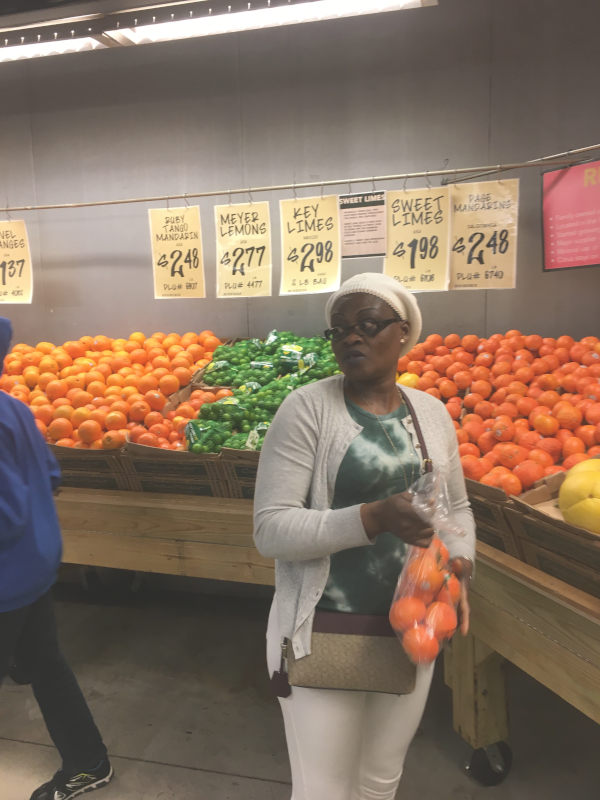

Nanyanzi was born and raised in Entebbe, UGANDA (East Africa)
You proabably heard about "Operation Entebbe" or "Operation Thunderbolt"
Operation Thunderbolt
Nanyanzi is a widow with a son of 25 years old. She also take care of four step children and her own parents
From being a housewife, Nanyanzi has found her way to school in the United States.
She prepared and passed the GED. Then, she went to College.
She got an Associate degree in the medical fiel.
Just after graduating from College with an Associate degree in Medical Imaging, Nanyanzi has got a job as Assistance Data Collector in an organization.
Nanyanzi is very closed to my family and me. She always seek my advise on her projects. My sons love her. My wife and her share cooking tips and recipes.